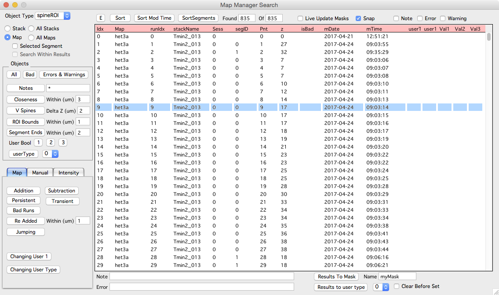

Search panel

The search panel allows a stack or map to be searched for stack db objects.
Performing a search will create a list of object hits.
Selecting an entry in search results will select that object in any open stack and map plots.
Double-click an entry to open its corresponding stack or run